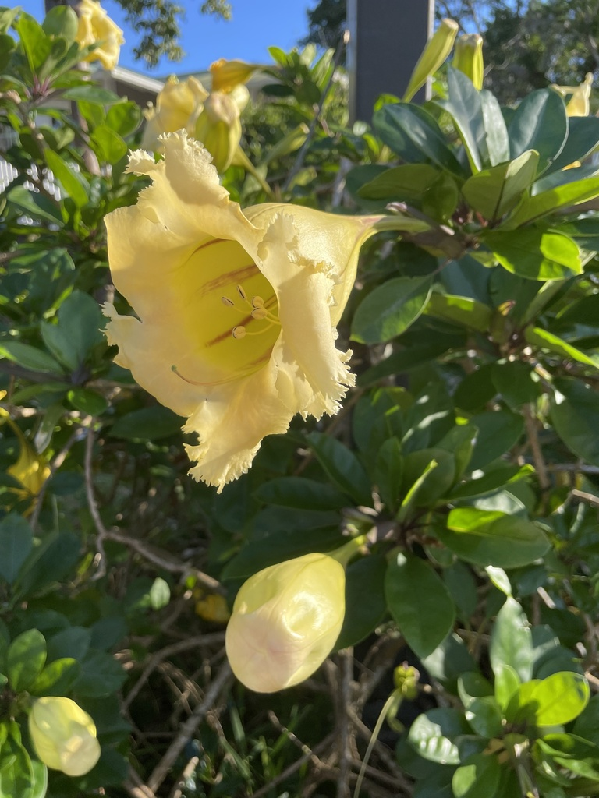

- The flowers open at dusk and release a heavy coconut-and-vanilla fragrance to attract their primary pollinators — bats. By daylight the scent fades and the blooms close back down.
- Chewing even a small fragment of a flower can cause dry throat, fever, delirium, and hallucinations — the same tropane alkaloids (atropine, hyoscyamine, scopolamine) found in Datura and deadly nightshade are present throughout the entire plant.
- The Huichol people of Jalisco, Mexico, called this vine 'kieri' — Tree of the Wind — and archaeological evidence suggests its ritual use as a hallucinogen may predate even peyote.
- Each individual bloom can weigh close to a kilogram as the fruit develops, encased in a dramatically enlarged calyx that nearly swallows it whole.
Native to Central America and northern South America, from Mexico through the Caribbean and into Colombia and Venezuela. It turns up in disturbed-area flora records across the tropics wherever it has been grown as an ornamental and naturalized.
In Florida it is grown purely as a cultivated ornamental, valued for its enormous flowers and bold tropical presence. It has no documented naturalized or wild populations in the state and is not considered invasive.
- Solandra grandiflora is a member of the nightshade family, Solanaceae — which makes it a distant cousin of the tomato, the potato, and the garden petunia, as well as closer kin to Datura and belladonna. That family connection is not incidental: like those relatives, the chalice vine loads its tissues with tropane alkaloids, the same compounds that put the 'deadly' in deadly nightshade.
- The flowers are architectural as much as botanical. Each bloom is a true chalice — a massive, fused corolla up to ten inches long, cream-yellow when it opens and deepening to gold as it ages, with spiraling purple-brown stripes on the interior. They open mostly at night, releasing a fragrance that one UF/IFAS horticulturist compared to coconut, banana, and vanilla.
- By morning the scent is largely gone.
- The vine's ethnobotanical history runs deep. The Huichol of Jalisco, Mexico, knew it as 'kieri' — the Tree of the Wind — and wove it into elaborate mythology around divinity, sorcery, and altered states.
- Archaeological evidence suggests Solandra's ritual use may predate peyote among some indigenous groups, making this garden ornamental one of the longer-documented psychoactive plants in Mesoamerican cultural history.
The chalice vine's primary pollinators are bats, drawn in after dark by the heavy coconut fragrance the flowers emit at night. Hummingbirds and bees are noted visitors during daylight hours, attracted by the large floral cups and available nectar, though the plant is not a documented specialist resource for any single pollinator species.
Because it flowers on woody stems and climbs vigorously over structures, the dense canopy it creates can offer cover and perch sites for birds. Its wildlife value in Florida is modest compared to native vines, but the bat-pollination story alone makes it worth watching on a warm evening.
Propagated in cultivation from stem cuttings taken during the growing season. Fruiting in cultivation is infrequent. In the wild, seed-set produces large globular berries enclosed within the enlarged calyx.
Solitary, terminal, trumpet-shaped flowers up to 9 or 10 inches long. Open cream-yellow and age to gold, with spiraling purple-brown stripes inside the corolla. Strongly fragrant at night; fragrance fades by day. Bloom primarily in cooler months in Florida.
Large, globular, fleshy berry largely enclosed by the persistent, enlarged calyx. Individual fruits can reach a kilogram in weight in the wild. In cultivation, fruiting is rare.
Large, leathery, dark green, and ovate — typically 4 to 6 inches long — giving the vine a lush, bold-textured appearance year-round.
Thick, woody, rope-like with prominent nodes. Adventitious roots can develop at nodes, helping the vine anchor itself to supports. Can reach 30 to 40 feet or more under good conditions.
Look for the enormous trumpet flowers first — no other vine in the park produces a bloom this size. Notice how the color deepens from pale cream to gold as individual flowers age, and check the inside of the corolla for the distinctive purple-brown spiral markings. The oversized, papery calyx that cups each flower (and eventually the fruit) is another giveaway.
On a warm evening, simply follow your nose.
This plant is seriously toxic — do not eat any part of it, and treat it with care when pruning. The green tissues (leaves, stems, unripe fruit, and seeds) contain tropane alkaloids — atropine, hyoscyamine, and scopolamine — that have caused deaths from anticholinergic poisoning.
Even chewing a fragment of the flower can produce dry throat, headache, fever, delirium, and hallucinations; larger ingestion can result in circulatory and respiratory failure. Wear gloves when pruning and keep cut material away from your eyes and mouth. The sap can irritate skin and mucous membranes.
All parts of the plant pose the same risk to dogs and other pets. Keep animals away from fallen flowers and stems. If ingestion is suspected in a person or animal, seek medical or veterinary attention promptly.
The genus Solandra is named for Daniel C. Solander, the Swedish naturalist who sailed on Captain Cook's first voyage (1768–1771) and collected thousands of botanical specimens. The genus was formally described by Swartz in 1787.

- © forkristin (CC-BY-NC), via iNaturalist
- © Randall Carter (CC-BY-NC), via iNaturalist